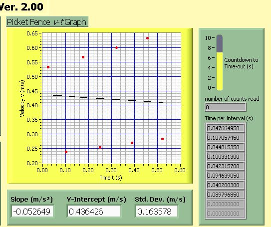
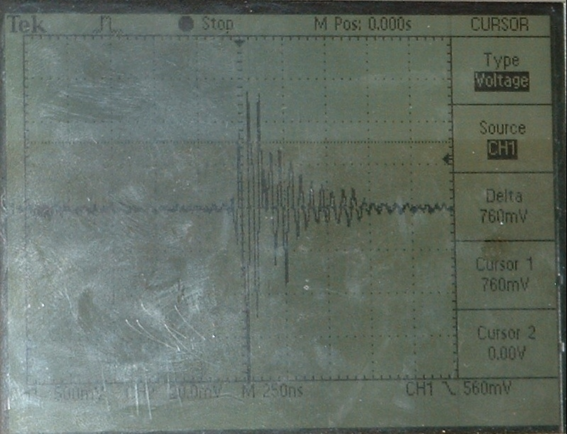

| October 9, 2005 |
| On the 5th I also looked at the circuit inside a new vernier photogate.
The new vernier photogates contain a 74HC132
high speed CMOS quad 2 input nand schmitt trigger. See photo
of vernier photogate board <link>. I believe the newer technology
in this photogate may work more reliably with our relativily new PCI NI
data aquasition boards than the older technology in the old pasco photogates!
I recomend testing the vernier photogates with our air track setups.
The physical dimensions of the new vernier photogate are different from the old photogates. I have looked at possible ways to mount the new vernier photogate on our rotational apparatus. See <link> |
| October 5, 2007 |
| Jill found a setup that caused problems when load resistor was absent
and I was able to get the waveforms that show how the load resistor affects
the output of photogate P08.
See waveforms at problem_photogate_08 |
| Oct. 4, 2007 (also see more photogate Comparisons showing different photogates connected with and without NI board) | ||
Erroneous DataI have caught more photogate data. This time I found a photogate that was consistently causing erroneous data in the photo data using the picket fence VI (in room 3290 using the air track). In this instance a load resistor to ground did not help; however, a 1 K pull-up resistor eliminated the false triggers. Waveforms are shown below for the no load case and the pull up resistor case.
Interpretation of ResultsMy interpretation of these results is as follows: When the photogate is not blocked the output is 5 Volts. When the photogate is blocked the output is 0 volts. Labview is falsely reading a the transition from 0 volts to 5 volts as a transition from 5 volts to 0 volts because the signal is not a clean rising edge but both rises and falls. This means that the first interval is actually the time from the leading edge of the first tine to the trailing edge of the first tine. The second interval is the time from the trailing edge of the first tine to the leading edge of the second tine. Note that the intervals are normally leading edge to leading edge. This interpretation is suggests that the first two times would be in the ratio of the tine width to the distance between the tines. This is the case. Both the times ratio and the width spacing ratio are about 1 to 2.This is quite different from what I was looking at in fall of 2005: The problem I looked in 2005 was primarily the situation in which only one or a few points were in error there was no consistency from run to run which points were involved. Some runs had problems and others did not. In that case noise spikes seemed to be the problem (ie they are random). In some cases relocated the blowers to the floor and adding power bars seemed to help. Load resisters seemed to eliminate the problems related to noise but in some cases the load resistor would cause this systematic problem to arise. Some stations have load resistors and some to not and I added them and took them away as the situation required. |
| Oct. 2, 2007 |
| The following shows a comparison of photogate accessories. Three types
were looked at: Old Pasco, New Pasco and Vernier. The responses of the
three types are all quite different. I believe more investigation is warranted.
In Richmond we are currently using mostly the old Vernier sensors. If the
signal in transition is too slow or lingers near the transition point too
long false triggering could result. When that lab is free I will collect
more data.
It appears that the vernier photogate is significantly faster than the pasco photogate but at least one of them goes into intermittent oscillations. See waveform collected in lab between lab sections.
In October 2005 I caught this noise signal at the NI terminal bloxk. It was induced in to the photogate signal cable from the blower power line (this is without load resistors -- signal wire intentianally placed close to the blower power line -- Note that the blowers use a universal motor which are known to be a source of bad EMI).  |